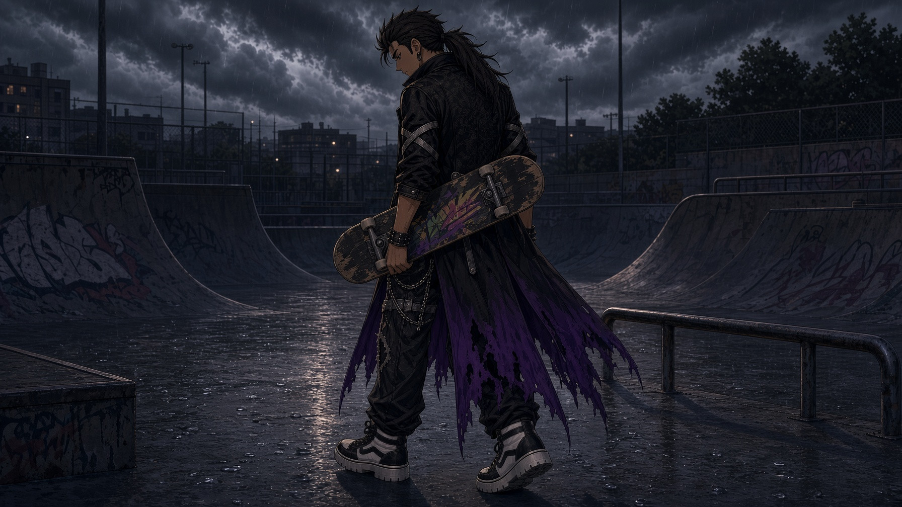

Nikko woke to the sound of the city doing its morning stretches. Pipes knocking in the walls, a truck growling like thunder, downshifting somewhere on the highway, the low electric hum that never quite stopped, not even at three in the morning. He lay on the stoop a while longer with his eyes closed and let it wash over him like the steam off a hot shower before stepping in.
Then he sat up, swung his legs over the edge, and hopped down. He stretched, twisting the ache out of his back. Sleeping on the stoop had been stupid, but he’d gotten back so late he hadn’t wanted to bother Mom. He checked his phone. She hadn’t texted back when he told her he’d be out late, so he figured it was fine.
The board was where he’d left it, leaning against the railing. It had collected more stickers. The wicked storm design underneath the fog of brands and cartoon characters roiled silently. He caught it on the way down from the stoop, one foot already finding the tail, and pushed off into the street as naturally as a fish in water.
Shin-Seibu in the morning was a different animal than Shin-Seibu at night. He liked it both ways. The neon was off. The signs were just signs. Old women swept their stoops with brooms that looked like they had been passed down from one stoop grandma to another for a hundred years. A man in an apron hosed down the sidewalk in front of his noodle shop and did not look up as Nikko rolled past. The city exhaled and Nikko breathed it in. Fish and diesel and the sweet rot of fruit left too long in a crate. It was home now.
He cut through the market street, dodged a delivery cart, ollied a puddle that was more of a small pond, and came out onto the alley.
The alley was the good one. The strange one. It ran between two buildings that leaned toward each other like a conspiracy, and the light in it was always wrong, always a little too dark and a little too cool, like the shade of a tree that wasn’t there. The walls were brick on one side and tile on the other, and the tile side had a stain on it that looked, at a squint, like a face. Nikko had squinted at it a hundred times and never quite decided.
At the end of the alley was a door.
It was old wood, dark with age and weather. It did not match the building it was set into, which was concrete and new. The other sides of the same building were tinted glass. It had no business having a door that looked like this. Candles were set outside the door, three of them, in little glass jars, and they were always lit. Nikko had never seen anyone light them. He had never seen anyone come out of the door. He had never seen anyone go in. The door was just there, and the candles were just lit, and that was it. It was the good alley, and that earned it enough credit that he didn’t ask it any questions.
He stepped into the shadow of the strange space. The sounds of the city quieted to a hush behind him and he made a few clicks with his tongue. Three cats came out from hiding.
The first was a gray tabby with a torn ear who had decided, at some point, that Nikko was his. The second was a black one with white socks who would not be touched and would not leave.
The third was a calico who was, Nikko was fairly sure, the same cat as the first, or the second, or both, and who existed in the alley in a way that did not quite obey the rules of cats.
He crouched and held out his hand. The gray thumped into his leg, ignoring his offered hand. The black one stared at him from a safe distance with a glare as long and piercing as full moonlight. The calico pushed its head into his palm and ran its length along it.
He fed them from the bag of dried fish he kept in his jacket, and they ate. Nikko watched the candles at the end of the alley do their small steady dance, and he thought about the contest today. The calico pushed its head into his palm and ran its length along it.
Wren’s contest. This afternoon. Wren had been talking about it for two weeks, in his usual way, as if the only question was how gracefully he would accept the trophy. Nikko was aware that this might have bothered some people. He didn’t mind. Wren was just being real. He was the best skater Nikko had ever seen in person, and Nikko had seen a lot of competition now. He had spent the last couple of summer months watching every skater in the city visit the bowl. Every one of them had been worse than Wren, even the visitors from out of town.
Nikko thought about the city and his time in it. Just seven or eight weeks. Time moved fast now that he had friends and something to do with his summer. Sometimes he felt like he hadn’t arrived in Shin-Seibu but had been delivered to it with intention, like a letter. He wondered where the address and stamp had been placed. For some reason that thought made him feel a little cold and he pulled his long jacket closer to himself. He felt the embroidery of the big golden X on his jacket push into his back as he did and tried to shake off the feeling. You were expected, said a little voice in his head, requested even. The calico pushed its head into his palm and ran its length along it.
He pushed that thought away as he stood, brushed the cat hair off his knees, and headed out of the alley to find Momo.
Momo was in the secret tunnel.
The tunnel was an old subway line, abandoned before she was born, and it ran under the eastern quarter like an abandoned mine. The entrances were bricked closed and the ones that weren’t were boarded up inside construction areas with fences and cameras. All of them except one, the one behind the fence that no one seemed to own, with the Momo-sized hole. She had always taken it as a sign and ignored the one posted about canine wariness. A sign with no bite might as well be a neon “enter here” to someone looking for an escape.
She was humming. She always hummed when she painted. She didn’t know she did it. Once Nikko had mentioned that she hummed to herself and she stopped. For about 2 minutes. Then she started again as if the humming were as much a part of painting as lifting the brush to begin with.
The mural was almost done. Flowers under the sea, that was the idea, a whole garden of them: corals and anemones and things that looked like flowers but were not, and above them, in the water, or in the air, it was hard to say, fish. Fish swimming in the sky. She had painted the fish first without really thinking about where she was going with it, and then she had painted the flowers below them. Now the two halves of the picture were arguing with each other in a way she liked, in the way a dream argues with itself.
She had been dreaming a lot lately. Or remembering. She couldn’t always tell the difference anymore. She would wake with the taste of some old afternoon in her mouth, a kitchen she did not recognize, a voice calling a name that might have been hers, and she would lie there in the dark and try to decide whether it had been a dream of an old memory or a memory of an old dream. She tried to forget them both. It was easier to just paint.
The sound of skateboard wheels on concrete came down the tunnel toward her. She smiled without turning or changing the pace of her work until the inevitable crash.
Nikko came around the curve too fast, as usual, and hit something in the darkness, a broken piece of tile or the edge of the platform. They cleaned up constantly, but it seemed like there was always a piece of detritus in his path when he came down to see her.
He was up before she could do more than look over at him. Up and grinning, a scrape on his forehead, that he pushed his hair over with one hand. He kicked his board into his hand expertly and said, “Hey.”
“Hey yourself,” she said.
“You should see the other guy,” he said, settling his weight to look as cool as he could.
Momo giggled gently. “Nikko, there is no other guy.”
“There’s always another guy.” It wasn’t that funny, but she chuffed at him, shook her head and turned back to her painting.
She liked Nikko being around, which was weird. She did not know why but his presence was comfortable. When she tried to count it out and make reasons, they weren’t convincing. He was too clumsy to be dangerous, and too cheerful to be hiding anything, and when he was in the tunnel with her, the tunnel felt less like a place she was hiding in and more like a place she had chosen. He felt safe like no one else did. She couldn’t explain it and had stopped trying weeks ago. For once in her life she felt safe around someone, enough that she had shared her secret hiding place with him. Perhaps prematurely, perhaps foolishly, but she hadn’t regretted it yet.
She saw him watching her. She leaned over their supplies in duffel bags and searched for something. When she stood up again, she handed him a fresh wide brush that she had taught him to use for a simple section of gradient from hot pink to cool greenish blue. His palette was nearby, messy as always. He took the brush in hand, grabbed his palette and some fresh paints and immediately got some on his sleeve.
“You’re supposed to paint the wall,” she said.
“I’m painting the wall in my heart,” he said.
“That’s not how walls work.”
They worked a while. The halfpipe was behind them, the one they had built into the old rail track the first week she had brought him down here. He had done odd jobs for the money. She had pulled boards and bolts out of dumpsters and construction sites. Neither of them had known what they were doing. The ramp was just shy of dangerous. It had a lip that caught his wheels if he came at it wrong, the transition was too tight, and the whole thing leaned a little to the left. Nikko had picked up some bad habits riding it. But he was getting better, and she liked watching him get better.
“You should practice at the park,” she said, not looking at him.
“I already do.”
She stopped painting. “You do?”
“Yeah. Mornings.”
She turned around. He was still working, still getting paint on his sleeve, oblivious. “You never told me that.”
“You never asked.”
She was annoyed. She did not want to be annoyed, and she was annoyed. They had built the ramp so he could practice where no one would see him. That was what she had thought. And all along he had been practicing at the park, in front of everyone, and never said a word. She did not know why it bothered her. No. She knew exactly why.
“Trying to get as good as Wren,” he said, and the annoyance went cold in her chest.
“Wren’s good,” she said.
“Wren’s the best.”
“Yeah.”
He set his brushes aside and walked towards the ramp, grabbing his board. She watched him go and thought about the way he said Wren’s name, like a word he was practicing for a test. Nikko hit the ramp with confidence while she watched. He caught the lip wrong. The board stopped. He did not.
She was already moving before she heard the crack of his head on the concrete.
He was sitting up by the time she got there, hand to his forehead, blood coming through his fingers. “I’m fine, I’m fine, it’s fine,” he was saying, the way he said everything. She was already pulling out the first aid kit she kept in a bag behind the ramp.
“Sit still,” she said.
“I’m fine.”
“Sit still.”
He sat still. She cleaned the cut. It was not as bad as it looked, which is the way with head wounds. She taped it and pressed the tape down with her thumb, and he watched her the whole time with an expression she chose not to notice.
They sat in the dark after. The tunnel hummed. Far above them the city went on with its day, its vibration coming down through the concrete and into their bones. Somewhere behind them water dripped, a slow, patient drip that had been dripping since before either of them was born.
“Have you ever been outside Shin-Seibu?” he asked.
She thought about it. “Once. Long ago.”
“What was it like?”
“I came from out of town,” she said. “Way out. I don’t really remember it.”
“It must have been beautiful,” he said.
“I can barely remember,” she said. “I’ve been in the city so long it’s all I remember. A reef of concrete and steel and brick and neon.” She looked up at the ceiling of the tunnel, at the roots coming through it, at the water stains that looked like continents. “That’s what I remember.” She pointed at the ceiling like it was the entire city.
He was quiet. She could feel him wanting to fix the conversation, wanting to say the right thing.
He pointed at the mural. “You must remember some of it,” he said. “You paint it so well.”
She looked at the flowers under the sea, at the fish in the sky, at the two halves of the picture arguing with each other, and she felt the old thing rise in her chest, the thing she did not have a name for, the thing that was maybe a memory and maybe a dream.
“I don’t remember,” she said, her teeth closer together than they needed to be.
She breathed deep and chose to forget. She could see on his face that this conversation was not going how he wanted. He looked like a confused puppy and she kicked herself inside for kicking him.
She tried to turn it around. “What about you?” she asked. “You never talk about where you came from. Don’t you miss your friends? From back east? Over the mountains?”
He looked at her. He did not answer right away.
“I don’t really remember them,” he said finally. “Everything back east was fake. Posers. You and Wren are my first real friends. You guys actually do stuff. You have lives. You’re real.”
She felt itchy. She had a rush of words that she wanted to say, but none of them could fit through the little opening she had. She wanted to tell him that everybody was posing a little. That nobody got to stand on just one side of it, real or fake. That the people he had left behind were probably just people, and he was probably just a person too, and that was fine. She opened her mouth to say something.
“What time is it?” he said.
She looked at her watch. She wore it on the underside of her wrist, the band’s little pink lotus on top. She turned her wrist over, read it, and said, “Afternoon.”
“We’re late.”
“For what?”
“Wren’s contest.”
He stood up quickly and grabbed his board. She barely got to her feet before he had grabbed her hand and was pulling her along. She let him. She was smiling again. She chose not to think about why.
Wren was bored.
This contest was a joke. To him, contests were always a joke. He stood at the top of the bowl with his board under his arm, watching the kid before him run a routine so basic it was almost an insult: kickflip, kickflip, fifty-fifty. The crowd cheered because crowds don’t know any better. Wren was bored. He pretended that he wasn’t nervous and pretended that he wasn’t pretending.
He had planned three runs. Three awesome runs, the kind that made the flunkies go quiet and the judges write down numbers wishing they could write down bigger ones. He had practiced them till his knees ached and had every part of the routine down perfectly.
Then he had woken up that morning. He had lain in the gold slatted darkness of his room, the sun burning against the far wall, and felt for the first time that he could remember that he just didn’t want to skate today.
The feeling hadn’t gone away as he stretched and ate breakfast with his mom and went to the skate park. It remained even while he watched the contest get set up. It remained stubbornly even when he walked up to the edge of the bowl for his first run.
So he had done a basic routine instead. Basic. Clean, because he did everything clean. The crowd had cheered, because crowds don’t know any better.
And now he was back at the top of the bowl with his board under his arm and feeling nervousness settle into his stomach like a stone.
He looked for them. His parents weren’t there, but that didn’t bother him. Nikko and Momo weren’t there either. The crowd wasn’t huge. He scanned the whole thing twice while he waited for his turn.
The flunkies were there. The flunkies were always there. Two of them were arguing about something, one was filming, and none of them noticed he hadn’t looked at them once.
He was going to ask Momo out after he won. He’d decided last week, the way he decided everything: decide it, then wait for the world to line up behind the decision. The world hadn’t lined up. Momo had been gone more and more, and when she wasn’t gone, she was with Nikko. Wren didn’t know what to do with that, and not knowing sat in his chest like a swallowed ice cube. So he’d win first and ask her after. Winning was a thing he knew how to do.
His name was called. Second run.
He dropped in.
People thought Wren was lucky. He wasn’t. People thought he was talented, and he was, but the way a knife is sharp: somebody had to grind it. He’d been grinding himself for years. Skinned palms, a split chin, a wrist that still ached when it rained. He didn’t think about what it had cost. Thinking about the cost was a way of losing.
He flew. He grabbed the toe rail and the world went small and bright beneath him, wind cold on his teeth, and everything was under control, and everybody liked Wren, and he deserved it, and the board slapped back under his feet the way it always came back, and he went up the other wall and turned and came down and did it again, and the crowd made the sound crowds make, and it was good, it was all good, and then it wasn’t.
He was coming back down when the board flipped and he was falling backward toward the coping, and the crowd noise washed over him like surf, and in the middle of it he thought, they’re not here, and the thought wasn’t about the trick.
His hand slapped the coping. Just barely. The concrete bit his palm. He steadied, reset, and slid to the middle of the bowl, chest heaving. The crowd was still cheering. He didn’t need them. That was the thing. He didn’t need them. They needed him. He was the one they came to see. He was the one who was going to win.
He shot up the other side and went for it. The trick was called Disaster. He’d been working on it for a month. He would slide up the wall and catch the board on the coping, right on the edge. He’d hold it there, and for a second he’d be standing on nothing, on the lip of the world. Then he’d drop back in. It made people go quiet. He’d been saving it.
He heard them.
He heard Nikko’s voice and Momo’s voice, together, from the far side of the crowd. Nikko was shouting something and pointing. Wren’s eyes went to them without asking his permission, and time went thick and slow.
Nikko was dragging Momo by the hand.
Momo was not looking at him.
Momo was looking at Nikko.
The board slammed down on the coping. Wren heard the crack. His ankle exploded, a bright white flower of pain that went all the way up into his teeth, and the board came off the coping wrong, wrong, wrong, and he barely caught it, barely, and he pumped for the last trick anyway, because he was Wren, because he didn’t stop, and his ankle folded under him like wet cardboard and he bailed at the bottom of the bowl and slid on his kneepads into the flat.
The world went silent in his head.
He stood up. He picked up his board. There was a crack running halfway through the middle, a clean dark line like a mouth.
He looked up. Nikko and Momo were at the edge of the crowd, staring, their faces gone pale. Then they went blurry, and he realized his eyes were stinging. He turned and walked off, keeping his weight off the bad ankle and his face perfectly still. The first raindrops hit the back of his neck as he went.
The sun was gone. It had been going for a while and he hadn’t noticed. The thunderstorm had won.
He went to the pizza place.
It wasn’t busy. It was never busy. Wren was pretty sure it was a mob front. The owner glared at everyone who came in except Wren’s clique and a couple of other teen crews, and the pizza was the best in the universe. Wren had been coming here since he was twelve. He sat in the corner booth with a slice going cold in front of him, poked the cheese with one finger, and stared at nothing.
The storm had gathered itself to match his mood. Rain hammered the window. Thunder rolled somewhere out over the water, and he felt it through the seat of the booth.
The owner came over. He didn’t usually come over. He was a big man with a face like a closed door and hands that had done things. He stood at the end of the booth, looked down at the cracked board on the seat, then at Wren. “That one’s done.”
“I know.”
“You going to buy a new one?”
“Maybe.”
The owner grunted. He wiped his hands on his apron and looked out at the rain long enough that Wren thought he was going to leave. Then he said, “You know what I learned. You don’t lose people. You lose the version of yourself you were when they were around. So you go build a better version. And you don’t call them. You let them come to you. If they come, they were always yours. If they don’t, they never were.”
Wren looked up at him.
“That’s the whole trick,” the owner said. “You don’t chase. You build something so good they can’t help it. That’s how you keep anybody.”
He picked up Wren’s empty glass and walked away.
Wren sat with it. It sounded right. It sounded like something a man who’d lived a life would know, the kind of thing tough guys said in movies, the kind that made a kid feel let in on a secret. He turned it over and over, and it didn’t scratch, didn’t catch on anything. It just sat in his gut, warm and heavy as the pizza, being true.
He didn’t notice that it was also exactly what he already wanted to do.
The bell over the door rang.
Nikko came in first, soaked, hair plastered to his forehead, Momo behind him. They stopped just inside the door, dripping on the mat, and Nikko’s face did the thing it did: it ran through six emotions in half a second and settled on sorry.
“Dude,” Nikko said. “Dude, we saw. We saw the whole thing. Are you okay?”
“I’m fine.”
“Your ankle.”
“I’m fine.”
Momo came around the table and slid into the booth across from him without asking. She looked at him like she was trying to understand an alien. Wren’s skin crawled under her gaze.
“We came as fast as we could,” Nikko said. “We didn’t know it was that early, thought it was later, we were hanging out talking when Momo checked her watch and then we ran the whole way, I swear, we ran the whole way.”
Wren looked at Momo. Momo looked at the table.
“You were hanging out,” Wren said.
“Yeah.”
“Together.”
Nikko’s face did the thing again. “Yeah, we were. She was painting, I was, I don’t know, there, skating around. We lost track of time. I’m sorry, man. I’m really sorry.”
“It’s fine.”
“It’s not fine, you wrecked your board, you wrecked your ankle, and we weren’t even there.”
“It’s fine.”
“Let us help,” Momo said. It was the first thing she’d said. Her voice was small, and it was the wrong thing to say.
Wren looked at her for a long time. The owner’s advice was already working on him, heavy and warm, telling him this was the test, the moment he found out whether he was the kind of person people came to. He didn’t know he’d already failed it. He didn’t know he’d made up the test himself.
“I don’t need help,” he said.
“Wren.”
“I said I don’t need help.”
Momo’s eyes filled up. She didn’t cry like movie actresses, with noise and motion. She cried the way she did everything, quietly, chin tucked, looking down at the table so nobody could see. The boys saw.
And then something happened that Wren would think about for a long time, in the dark, in the weeks when everything was coming apart. Nikko looked at him across the table, wet hair, scraped forehead, a face that couldn’t hold a grudge for more than a minute, and something passed between them. A small, wordless agreement. The kind boys make when a girl is about to cry and neither of them can stand it.
Nikko sat down next to him. He bumped Wren’s shoulder with his own.
“Hey,” he said, to Momo. “Hey, look. It’s okay. We’re good. Right, Wren? We’re good.”
Wren looked at Nikko. Nikko looked back, eyebrows up, almost pleading, and Wren understood exactly what was being asked of him and exactly what it would cost. His throat went tight. He did it anyway. It was easier than sitting in the truth of the thing.
“Yeah,” Wren said. “We’re good.”
He put his hand out. Nikko took it. They did the handshake they always did, the one with the little snap at the end. Momo looked up, eyes still wet, and smiled. The smile was real. That was the worst part.
“You guys,” she said.
“We’re good,” Nikko said again, to her, like a promise. It was a promise he didn’t know how to keep.
Outside, the rain had thinned to a drizzle, the kind that didn’t fall so much as hang in the air, waiting. The three of them stood under the awning with nowhere to put their hands. Momo was still hiccuping, little catches in her chest she kept trying to swallow.
“We should go somewhere,” Nikko said.
Wren looked at him.
“Like a road trip. Last week of summer, before school eats us. Just the three of us. Get out of the city, go see the mountains, find—“ He waved a hand at the whole wet horizon. “I don’t know. Our future or something.”
Momo laughed, and it came out wet and broken in the middle by a hiccup. She pressed her knuckles to her mouth. Her shoulders came down a little.
Wren’s ankle throbbed in time with his heartbeat. He shifted his weight off it and looked at the street instead of either of them. “Sure,” he said. “Whatever.”
It was enough. Nikko grinned like he’d won something.
They walked home together, hoods up, boards under their arms. Nikko talked the whole way: about the trip, about whether they’d take the bus or beg somebody’s older cousin for a car, about whether Wren’s ankle would be healed by then, about how next time Wren would land Disaster for sure and they’d all be there early and stay the whole time. He talked the way he always did when he was trying to make something true by saying it. Momo walked between them with her hands pulled up into her sleeves and said almost nothing. Wren walked on the outside, his ankle sending a hot spike up his shin every time it touched the pavement, and kept his mouth shut.
At the corner where their ways split, Nikko stopped and said, “You sure you’re good?”
“I’m sure.”
“You want us to walk you the rest of the way?”
“I’m good.”
Nikko hesitated. Momo looked at Wren. Wren looked at the ground. Momo opened her mouth like she was going to say something, then closed it. Nikko took her hand, and the two of them went one way, and Wren limped the other.
He walked home alone with the cracked board under his arm, his ankle throbbing with every step, and the owner’s advice still sitting in his gut being true. It was still exactly what he already wanted to do.
He didn’t call them that night. They called him. He watched his phone buzz itself across the nightstand and didn’t answer.
At the end of the alley, the candles went out.
All three of them, at once, the way a breath goes out, and there was no wind in the alley, there was never any wind in the alley, and the door stood in the dark with its old wood and its strange wrongness, and the water ran down the brick on one side and the tile on the other, and the face in the tile stain seemed, in the dark, to be watching.
Nobody noticed. Nobody was there to notice.
The rain kept falling.